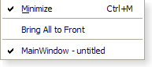

| Home · All Classes · Modules · QSS HELP · QSS 案例 · VER007 HOME |
菜单QMenu类提供了一个菜单部件在菜单栏，上下文菜单，和其他弹出菜单中使用。More...
继承QWidget。
菜单QMenu类提供了一个菜单部件在菜单栏，上下文菜单，和其他弹出菜单中使用。
menu小部件是一个选择菜单。它可以是一个菜单栏下拉菜单或独立的上下文菜单。当用户点击相应的项目或按下指定的快捷键下拉菜单显示的菜单栏。使用QMenuBar.addMenu（ ）插入一个菜单到菜单栏。上下文菜单通常是由一些特殊的键盘按键或单击鼠标右键调用。它们可以非同步地执行popup（）或与同步exec_（ ） 。菜单也可以响应按键操作调用，这些都是一样的上下文菜单，除了它们是如何被调用。
 |
 |  |
图。在显示的菜单Plastique widget style，Windows XP widget style和Macintosh widget style。
菜单包括行动项目清单。操作时添加的addAction（ ）addActions（）和insertAction（）函数。一个动作是垂直表示和呈现QStyle。此外，行动可以有一个文本标籤，画在最左侧的可选图标，快捷键序列，例如“ Ctrl + X键” 。
通过菜单持有的现有动作可以与发现actions（ ） 。
有四种操作项目：分隔符，即显示一个子菜单的操作，窗口小部件和执行操作的动作。分离器插入addSeparator（ ） ，与子菜单addMenu（ ） ，和所有其他项目都被视为行动项目。
当插入操作项目您通常会指定一个接收器和一个插槽。每当产品的接收器将被notifedtriggered()。此外，菜单QMenu提供两个信号，activated（）和highlighted（），该信号的QAction这是从菜单触发。
你清除一个菜单clear（）和remove个别行动项目removeAction（ ） 。
一个菜单QMenu还可以提供一个分离式菜单。可撕式菜单是包含菜单的副本的顶层窗口。这使得它可以为用户“撕下”常用菜单，并把它们在屏幕上方便的地方进行定位。如果你想为一个特定的菜单中选择此功能，将可撕式手柄setTearOffEnabled（ ） 。当使用撕下菜单，记住，这个概念通常不使用在Microsoft Windows这样一些用户可能并不熟悉它。请考虑使用QToolBar代替。
窗口小部件可以被插入到菜单与QWidgetAction类。此类的实例是用来装小部件，并插入菜单与addAction（ ）重载采用一个QAction。
反之，操作可以被添加到窗口小部件与addAction（ ）addActions（）和insertAction（）函数。
Warning:为了使屏幕上的菜单QMenu可见，exec_（）或popup（ ）应该被用来代替show（ ） 。
如果菜单集成到本机的菜单栏上的Windows Mobile不支持的信号： aboutToHide （ ） ， aboutToShow （）和徘徊（ ） 。这是不可能在Windows Mobile上的本机菜单显示一个图标。
菜单QMenu可以在菜单/菜单栏插入一次。后来插入不会有任何影响或将导致禁用的菜单项。
请参阅Menus示例如何使用示例QMenuBar和菜单QMenu在你的应用程序。
Important inherited functions: addAction（ ）removeAction（ ）clear（ ）addSeparator（）和addMenu（ ） 。
该parent的说法，如果不是没有，原因self通过Qt的，而不是PyQt的拥有。
构造一个菜单与父parent。
虽然一个弹出菜单始终是一个顶级窗口部件，如果父对象被弹出菜单会时父母被破坏（与任何其他删除QObject） 。
该parent的说法，如果不是没有，原因self通过Qt的，而不是PyQt的拥有。
构造一个菜单，一个title和parent。
虽然一个弹出菜单始终是一个顶级窗口部件，如果父对象被弹出菜单会时父母被破坏（与任何其他删除QObject） 。
See also title。
返回位于项目pt;返回0 ，如果有有没有项目。
从重新实现QWidget.actionEvent（ ） 。
返回行动的几何形状act。
返回当前突出显示的动作，或者0，如果不采取行动是当前突出显示。
See also setActiveAction（ ） 。
这是一个重载函数。
用这种便利函数创建一个新动作text。该函数将新创建的行动，行动的菜单的列表中，并返回它。
See also QWidget.addAction（ ） 。
这是一个重载函数。
这个方便的功能创建了一个新动作icon有的text。该函数将新创建的行动，行动的菜单的列表中，并返回它。
See also QWidget.addAction（ ） 。
这是一个重载函数。
这种便利函数创建一个文本新动作text和一个可选的快捷方式shortcut。动作的triggered()信号被连接到receiver的member插槽。该函数将新创建的行动，行动的菜单的列表并返回它。
See also QWidget.addAction（ ） 。
这是一个重载函数。
这个方便的功能创建了一个新动作icon有的text和一个可选的快捷方式shortcut。动作的triggered()信号被连接到member的槽receiver对象。该函数将新创建的行动，行动的菜单的列表中，并返回它。
See also QWidget.addAction（ ） 。
这是一个重载函数。
追加行动action于诉讼的菜单的列表。
See also QMenuBar.addAction（）和QWidget.addAction（ ） 。
这个方便的功能增加menu作为一个子菜单，此菜单。它返回menu的menuAction（ ） 。此菜单不采取所有权menu。
See also QWidget.addAction（）和QMenu.menuAction（ ） 。
添加一个新的QMenu同title到菜单。菜单采用了菜单的所有权。返回新菜单。
See also QWidget.addAction（）和QMenu.menuAction（ ） 。
添加一个新的QMenu同icon和title到菜单。菜单采用了菜单的所有权。返回新菜单。
See also QWidget.addAction（）和QMenu.menuAction（ ） 。
这个便利函数创建一个新的分隔作用，即一个行动QAction.isSeparator（ ）返回True ，并添加了新的行动，行动该菜单的列表。它返回新创建的动作。
See also QWidget.addAction（ ） 。
从重新实现QWidget.changeEvent（ ） 。
删除所有菜单的操作。通过菜单，而不是在任何其他部件所示资的行动都将被删除。
See also removeAction（ ） 。
如果一个菜单不适合在屏幕上勾画出自己，以便它不适合。它的风格取决于什么布局方式（例如，在Windows上，将使用多个列） 。
该函数返回的列所必需的数量。
返回当前的默认操作。
See also setDefaultAction（ ） 。
从重新实现QWidget.enterEvent（ ） 。
从重新实现QObject.event（ ） 。
执行此菜单同步。
这等效于exec(pos())。
这将返回触发QAction无论是在弹出菜单或它的一个子菜单，或者0，如果没有项目被触发（通常是因为用户按下Esc键） 。
在大多数情况下，你要自己指定的位置，例如，当前鼠标位置：
exec(QCursor.pos());
或对齐到一个小部件：
exec(somewidget.mapToGlobal(QPoint(0,0)));
或在反应的QMouseEvent* E：
exec(e->globalPos());
这是一个重载函数。
执行此菜单同步。
弹出的菜单中，这样的动作action将在指定global位置p。翻译一个小部件的局部坐标系到全局坐标，使用QWidget.mapToGlobal（ ） 。
这将返回触发QAction无论是在弹出菜单或它的一个子菜单，或者0，如果没有项目被触发（通常是因为用户按下Esc键） 。
请注意，所有信号都发出如常。如果连接了QAction到一个时隙，并调用菜单的exec_（ ） ，你既可以通过信号槽连接，并在返回值获得的结果exec_（ ） 。
常见的用法是在当前鼠标位置来定位菜单：
exec_(QCursor.pos());
或对齐到一个小部件：
exec_(somewidget.mapToGlobal(QPoint(0, 0)));
或在反应的QMouseEvent* E：
exec_(e->globalPos());
当定位一个菜单exec_（）或popup（ ） ，请记住，你不能依赖于菜单的电流size（ ） 。出于性能原因，菜单调整其大小只在必要时。所以在很多情况下，前和后显示的大小是不同的。相反，使用sizeHint（ ），计算适当的大小取决于菜单的当前内容。
See also popup（）和QWidget.mapToGlobal（ ） 。
这是一个重载函数。
执行菜单同步。
菜单的操作由列表中指定的actions。该菜单会弹出让指定的动作，at，出现在全球的地位pos。如果at没有指定，那么在菜单出现在位置pos。parent是菜单的父控件，指定母会时提供上下文pos还不足以决定在哪里菜单应该去（例如，与多个桌面或当父被嵌入在QGraphicsView） 。
该函数返回触发QAction无论是在弹出菜单或它的一个子菜单，或者0，如果没有项目被触发（通常是因为用户按下Esc键） 。
这相当于：
QMenu menu; QAction *at = actions[0]; // Assumes actions is not empty foreach (QAction *a, actions) menu.addAction(a); menu.exec_(pos, at);
See also popup（）和QWidget.mapToGlobal（ ） 。
这是一个重载函数。
执行菜单同步。
菜单的操作由列表中指定的actions。该菜单会弹出让指定的动作，at，出现在全球的地位pos。如果at没有指定，那么在菜单出现在位置pos。
该函数返回触发QAction无论是在弹出菜单或它的一个子菜单，或者0，如果没有项目被触发（通常是因为用户按下Esc键） 。
这相当于：
QMenu menu; QAction *at = actions[0]; // Assumes actions is not empty foreach (QAction *a, actions) menu.addAction(a); menu.exec_(pos, at);
See also popup（）和QWidget.mapToGlobal（ ） 。
从重新实现QWidget.focusNextPrevChild（ ） 。
从重新实现QWidget.hideEvent（ ） 。
此功能将强行隐藏撕下菜单使得它从用户的桌面上消失。
See also isTearOffMenuVisible（）和isTearOffEnabled（ ） 。
初始化option从这个菜单和信息的价值action。当他们需要一个这种方法是有用的子类QStyleOptionMenuItem，但不希望在所有的信息填写自己。
See also QStyleOption.initFrom（）和QMenuBar.initStyleOption（ ） 。
这个方便的功能插件menu行动之前，before并返回菜单menuAction（ ） 。
See also QWidget.insertAction（）和addMenu（ ） 。
这个便利函数创建一个新的分隔作用，即一个行动QAction.isSeparator（ ）返回True 。该函数插入新创建的行动变成行动之前行动这个菜单的列表before并返回它。
See also QWidget.insertAction（）和addSeparator（ ） 。
如果有，否则插入菜单中没有明显的动作，假，则返回True 。
这个函数中引入了Qt 4.2中。
See also QWidget.actions（ ） 。
当一个菜单被撕下第二个菜单显示来显示菜单内容在一个新窗口。当菜单在此模式下，菜单是可见的，则返回True ，否则返回False 。
See also hideTearOffMenu（）和isTearOffEnabled（ ） 。
从重新实现QWidget.keyPressEvent（ ） 。
从重新实现QWidget.leaveEvent（ ） 。
返回与此菜单关联的动作。
从重新实现QWidget.mouseMoveEvent（ ） 。
从重新实现QWidget.mousePressEvent（ ） 。
从重新实现QWidget.mouseReleaseEvent（ ） 。
从重新实现QWidget.paintEvent（ ） 。
显示的菜单，使动作atAction将在指定global位置p。翻译一个小部件的局部坐标系到全局坐标，使用QWidget.mapToGlobal（ ） 。
当定位一个菜单exec_（ ）或弹出（ ） ，请记住，你不能依赖于菜单的电流size（ ） 。出于性能原因，菜单调整其大小只有当必要的，所以在很多情况下，前，后演出的规模是不同的。相反，使用sizeHint（ ），计算适当的大小取决于菜单的当前内容。
See also QWidget.mapToGlobal（）和exec_（ ） 。
设置当前突出显示的动作act。
See also activeAction（ ） 。
此设置的默认操作为act。默认动作可以具有视觉提示，这取决于当前QStyle。默认动作通常表示在默认情况下，当发生跌落会发生什么。
See also defaultAction（ ） 。
从重新实现QWidget.sizeHint（ ） 。
从重新实现QObject.timerEvent（ ） 。
从重新实现QWidget.wheelEvent（ ） 。
这是该信号的默认超载。
这个信号被发射之前的菜单，从用户隐藏。
这个函数中引入了Qt 4.2中。
See also aboutToShow（）和hide（ ） 。
这是该信号的默认超载。
这个信号被发射的菜单被显示给用户之前。
See also aboutToHide（）和show（ ） 。
这是该信号的默认超载。
当一个菜单操作高亮显示这个信号被发射;action是导致该信号被发射的操作。
通常这是用来更新状态信息。
See also triggered（）和QAction.hovered（ ） 。
这是该信号的默认超载。
当在该菜单中的操作被触发这个信号被发射。
action是导致该信号被发射的操作。
通常情况下，在连接每个菜单操作的triggered()信号到其自己的定制插槽，但有时你会想几个动作连接到一个单一的插槽，例如，当你有一组密切相关的动作，如“左对齐” ， “中心” ， “右对齐” 。
Note:这个信号被发射在一个层次中的父主菜单。因此，只有父菜单需要连接到一个槽;子菜单无需进行连接。
See also hovered（）和QAction.triggered（ ） 。
| PyQt 4.10.3 for X11 | Copyright © Riverbank Computing Ltd and Nokia 2012 | Qt 4.8.5 |